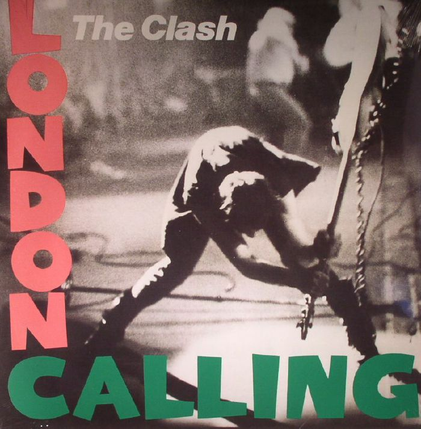
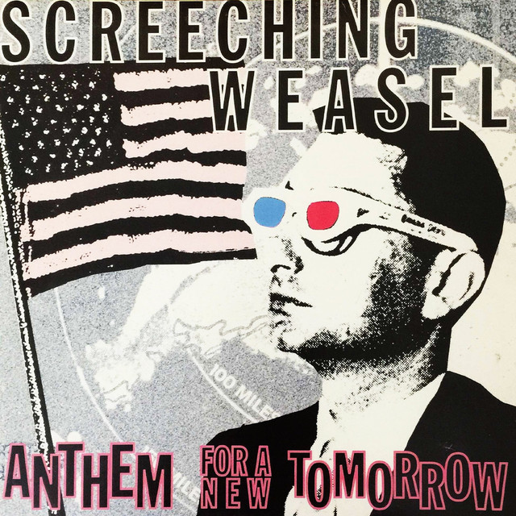
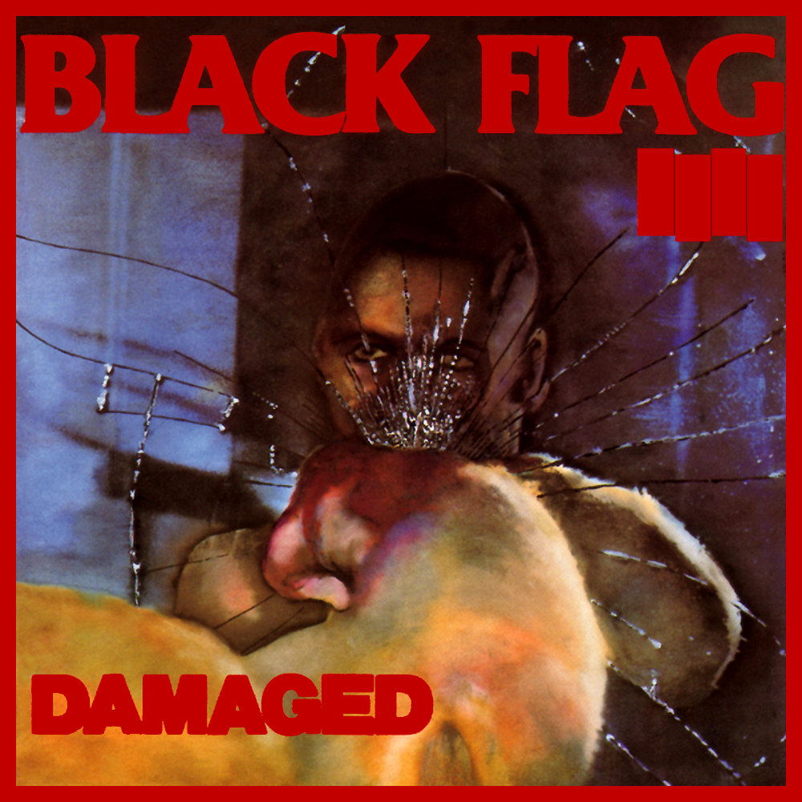
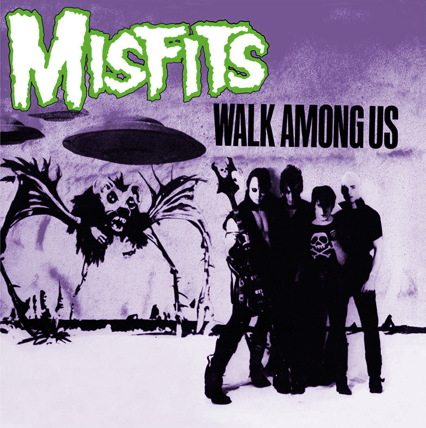

The Clash: London Calling

Album Cover Pictured Above
Check it out on YouTube!
London Calling by The Clash: I love this album, and at times forget just how much I LOVE THIS ALBUM! My manager at Wendy's, and girlfriends mom at the time, bought this album for me when I was 16 years old as a Christmas present. A long, long time ago, before the internet reeeaaaallly existed, finding the albums you wanted to hear was a never ending scavenger hunt. I would later learn that the picture on the cover was the bass player, and not the guitar player smashing his instrument.
"Punk Rock" was an in the air thing back in those days, almost mythical. Before the net, you heard murmurs from older friends, mentions in magazines, and interviews from mainstream bands instructing you what to listen to. Before the late 80's, the great thing about Punk rock was that it was a very broad term to describe weird, ie: new and creastive rock and roll. Like taking what someone would love about classic rock and turning down the other street at the crossroads of Epic Guitar Solos St., and Anything Goes Ave. This album does just that.
Essentially a classic rock album with a twist, all guitar music outside of the forefathers of Country and Blues are covered here. Opening with a dark ska(?), anthem of the title track, the rockabilly of, "Brand New Cadillac", the old time feel of, "Jimmy Jazz", to the pop perfection of, "Lost in the Super Market", and "Train in Vain". This is one of those landmark Punk albums that flows like a classic rock record. When I remeber this album, a quick listen leads to the whole album, and brings me back to the place of being being a 16 year old, in Midwest America learning music, and all it's possibilities are endless.
Click to head back to the top!
Screeching Weasal: Anthem For A New Tommorow

Album Cover Pictured Above
Check it out on YouTube!
After The Ramones invented pop punk, Screeching Weasal mastered it. This album is not hailed as their best, may not even have their best tracks that they are known for, but it has some of my favorites. If you've ever had your heart broken, felt like an outsider, or just wanted to have a good time; I challenge you to listen to this album and not want to hear it again shortly after
This album lived in my walkman for a summer when I was 17. "Anthem For A New Tommorow" has the perfect blend of catchy lyrics, a happy feel, and angsty lyrics. The scientifically, I swear it doesn't get any better mix of: "I looove life and i don't care what you think". Don't take my word for, hit the link above and listen to: "Totally", "Leather Jacket", "I'm gonna Strangle You Tonight", and "Falling Apart". One of the best pop punk albums ever! also, bonus points for mentioning the Belmont Bus, I spent my summers in chicago when I was a kid.
Click to head back to the top!
Black Flag: Damaged

Album Cover Pictured Above
Check it out on YouTube!
Whoah #$%! I easily have one of the coolest brothers ever. I was 13 years old and Black Flag was one of those bands that I always heard about but could never get my hands on. I had zero idea what they sounded like. A local band covered, "Rise Above", and I had no idea it was a Black Flag song.
I was at Hastings with my brother when I found this cassete, $15.00 to my name, I was hesistant buying an album that I had no idea what it sounded like, but every older friend told me I should hear.
When my brother saw what was in my hand, he bought it for me as a birthday present and told me, "You need to hear this". This album blew my mind! Nothing had, or does still sound like it. After this album my taste in music changed forever. Still a lover of Classic Rock and Blues, I was determined to hear every obscure out there band I could get my hands on. I'm not naming any tracks, click the link above and listen to the whole thing right now, loud, your welcome. Keep in mind, I had this in my walkman in 8th grade, my brother rules.
Click to head back to the top!
The Misfits: Walk Among Us

Album Cover Pictured Above
Check it out on YouTube!
Easily the perfect band for a teenager. My friend Jay stole the box set of The misfits from hastings, worried his dad would realize what he done he gave it to me. I had every song they ever released when I was 15. Their whole career is amazing, but "Walk among Us" is easily my favorite.
The early career of The Misifits is great, but almost serious somewhat, or vulgar for the sake of it. Not to sound like a school mom here, but really analze the lyrics of their early tracks; I dig them, they're fun, but what did you just say Danzig??
What I'm really trying to say here is that this album is the one that blends 50's Horror Movies and Garage Rock with perfection. Danzig is a Punk Rock Elvis, the whoahs of the background vocals make you want to sing along everytime. "Skulls", "20 eyes", and "I turned into a Martian" wil have you singing along in seconds. Hands down, my favorite albium they put out. Bonus points for the coffin shaped boxed set I used to hide my cigarettes in when I waqs 15.
Click to head back to the top!
Dillinger Four:
Midwestern Songs Of The Americas

Album Cover Pictured Above
Check it out on YouTube!
I saw this band play my friends basement when I was 16 at two in the morning. At 6.00 AM they drove to the airport to get on a plane, and open for Green Day in Japan the next day. Hailing from Minneapolis, MN, home of other great bands such as, "The Replacements", Dillinger Four just rules. This album is filled with weird social conditioning sound clips from the 1950's between tracks. Midwestern Songs For The Americas: This whole album is amazing from start to finish, click the link and turn it to 11!
Click to head back to the top!